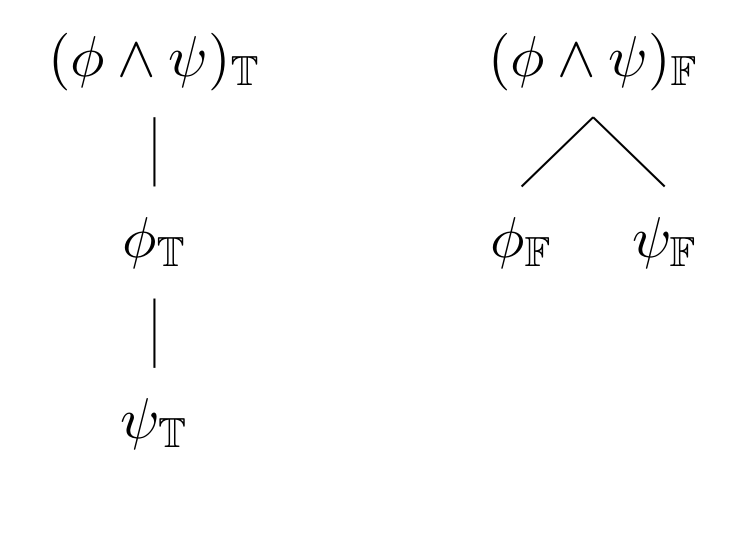
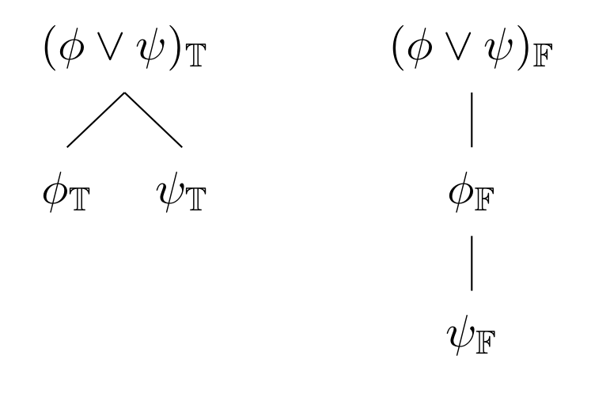
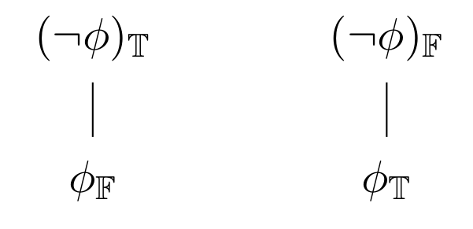
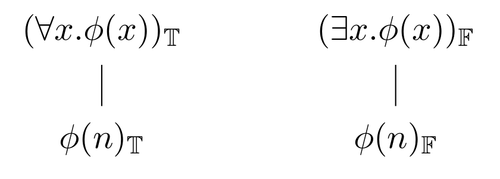
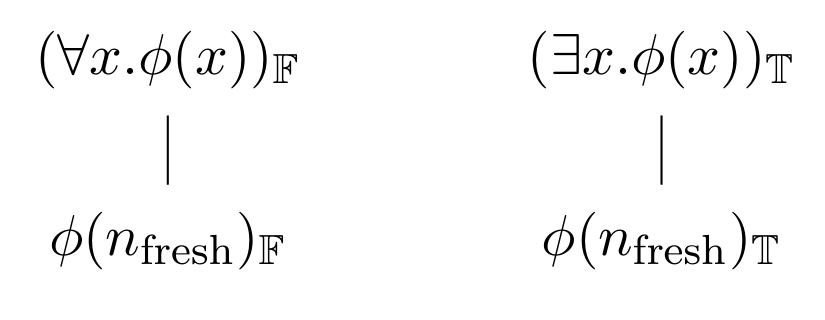
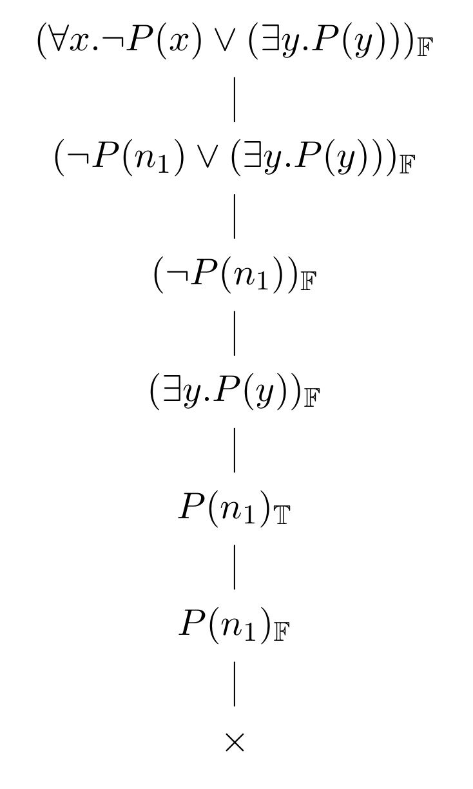

Analytic tableaux
Table of Contents
1. Rules
We've begun discussing analytic tableaux, which provide a method of proving contradictions in (classical) first-order logic by breaking (signed) formulae down into smaller (signed) formulae, according to both the sign and the main connective of the relevant formula.
Using this method, we represent the results of breaking a formula down into pieces as a tableau. A tableau is just a tree whose nodes are signed formulae. The rules associated with each connective provide general schema for expanding some tableau, i.e., by somehow adding new signed formulae to it.
Each connective, \(∧\), \(∨\), \(¬\), \(∀\), and \(∃\) has its own set of rules, as follows. Here, each rule is represented by a tree containing the to-be-expanded node as the root node and the formulae that a given tableau is expanded with as child nodes.
1.1. Conjunction rules

True conjunctions are expanded by introducing child nodes on which each of the conjuncts is true.
False conjunctions cause a given path of the tableau to branch into two paths: one in which the left conjunct is false, and one in which the right conjunct is false. Thus to show that the the tableau is contradictory, we need to show that a contradiction is introduced along both paths, since we don't know which conjunct is false.
1.2. Disjunction rules

True disjunctions are expanded by branching into two separate paths, one where each disjunct is true. That is, to show that a disjunction results in a contradiction, it is sufficient to show that both of its disjuncts lead to a contradiction.
False disjunctions branch by making each disjunct false along the same path.
1.3. Negation rules

A true negation becomes an unnegated false thing, and a false negation becomes an unnegated true thing!
1.4. γ rules

If it is true that every \(x\) is such that \(φ(x)\), you can pick any name \(n\) you want and expand the path by saying it is true that \(φ(n)\), since \(φ\) will certainly be true of \(n\).
If it is false that some \(x\) is such that \(φ(x)\), you can pick any name \(n\) you want and expand the path by saying it is false that \(φ(n)\), since \(φ\) will be false of \(n\) (if it were true of \(n\), then there would be some \(n\) such that \(φ(n)\) and \((∃x.φ(x))\) would be true).
1.5. δ rules

If it is false that every \(x\) is such that \(φ(x)\), that means there must be some \(x\) such that it is false that \(φ(x)\) (if there weren't such an \(x\), then it would be true that every \(x\) is such that \(φ(x)\)). Since we don't know which \(x\) makes the universal statement false, we should just expand the path by picking a fresh name \(n_{\text{fresh}}\), i.e., which hasn't occurred anywhere on the path yet, and saying it is false that \(φ(n_{\text{fresh}})\).
Similar reasoning applies to a true existential formula. If it is true that there is some \(x\) such that \(φ(x)\), then we should add \(φ(n_{\text{fresh}})\), for some name \(n_{\text{fresh}}\) which hasn't occurred yet anywhere on the path. In other words, it doesn't matter what we call the relevant \(x\), as long as we haven't identified it with anything else we've made claims about on the same path.
2. An example
Goal: show that \((∀x.P(x) → (∃y.P(y)))\) is a theorem.
